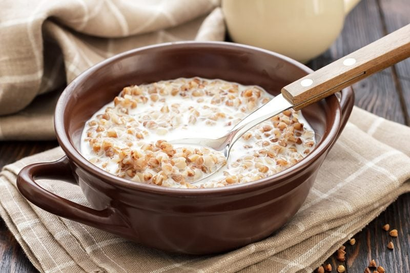

Buckwheat (Raw / Cooked)
What is our number one goal with healthy eating? Optimal health! The core of optimal health starts with a strong, healthy digestion system. It doesn’t matter how healthy you’re eating if your ability to absorb nutrition is lacking. I believe strongly in eating raw foods, but most importantly I believe in eating foods that work with and for your own body. There are hundreds of different eating programs out there; ayurvedic, macrobiotic, raw, vegan, GAPS, SCD… the list goes on. I personally don’t believe that there is one style of eating that fits all.

So our number one goal ought to be adopting eating habits that facilitate Optimal Digestion, and sometimes it can be difficult for those who have a compromised digestive system. Soaking, sprouting, fermenting, juicing, and even cooking are methods that you can use to heal the body. But it doesn’t stop there. We need to take our living conditions, stress levels, physical activity, as well as our emotional well-being into consideration when tackling and maintaining a healthy life.
Complex Carbohydrate Seed
While most people think of buckwheat as a whole grain, it’s actually a seed that is high in both protein and fiber. It is the seed of a broadleaf plant related to rhubarb. And despite its name, buckwheat actually doesn’t contain any wheat or the protein gluten.
Compared to many other carbohydrates and whole grains, buckwheat is low on the glycemic index. The complex carbohydrates found in buckwheat nutrition are absorbed into the bloodstream slowly, which help you to feel full for longer and support sustainable energy. This helps fight imbalances in blood sugar levels that can lead to inflammation, fatigue, and even diabetes or metabolic syndrome.
Cooking Buckwheat
Yes, I realize that this is a raw recipe site, but my first and foremost goal of achieving health is learning to address our individual body’s needs. I am here to share that if you can’t digest raw foods or a particular raw food, it’s ok to cook it. You will still reap nutrients. When it comes to buckwheat, the soaking and sprouting process is still beneficial but know that the heat will diminish some of the nutritional properties… sprouting first will ultimately optimize assimilation/digestion so I recommend it if you can. If your system can handle raw buckwheat just fine… stick with that… just know that you have options, my friend.
Raw Buckwheat & Toasted Buckwheat (Kasha)
When shopping for buckwheat, you need to be aware of the two forms that it comes in. Raw buckwheat is a pyramid shaped, light beige/tan color. You can eat raw buckwheat once you go through the soaking and sprouting (optional) technique. Toasted buckwheat is referred to as Kasha. It looks the same as the raw version except that it is a darker brown color. To me, the taste is a little bit stronger than the raw form.
What I love about buckwheat is that it is very versatile when it comes to creating dishes. You can use it right away after soaking it, adding a non-dairy milk, a little sweetener and perhaps some fresh fruit. A perfect, nutrient-rich breakfast. You can also create savory dishes with it. If you go through the sprouting process, you can dehydrate it and create a flour. You can learn how to do that (here). I tend to create large batches of buckwheat so I can divide it up and create multiple dishes throughout a weeks time. So there you have it, a little culinary knowledge can go a long way in the kitchen. Have fun with it and enjoy. blessings, amie sue
 Ingredients:
Ingredients:
Yields: about 2 to 2 1/2 cups cooked
Preparation:
Raw Version
- There is a two-step process to this. Soaking and Sprouting. You can just do one or both to increase the intake of nutrients.
- Click on the link listed above in the ingredient list to learn how to soak and sprout the buckwheat.
- After soaking the buckwheat for a minimum of 30 minutes, you can enjoy it right away, or take a few extra days to sprout it.
- Personally, I prefer to use the buckwheat just after soaking… it’s a taste thing for me. But feel free to let those little buckwheat tails grow! I find the longer they grow the more bitter it becomes.
- If you plan to use it just soaked, keep in the refrigerator for up to seven days, but every day you need to rinse them to prevent mold and bacteria from forming.
Cooked Version
- Be sure to read the link above on soaking and/or sprouting the buckwheat before using in this recipe.
- Add the buckwheat, water, and salt to a boil.
- Once boiling, cover, reduce the heat and continue on a slow rolling boil for 10-15 minutes until all water is absorbed.
- Check in every few minutes, after the 10-minute mark.
- Don’t completely remove the lid so you lose all the steam.
- After all the water is absorbed, turn off the stove, remove from heat and allow buckwheat to sit with the lid on for about 5 minutes.
- Remove lid and fluff with a fork.
- Enjoy right away or store in the fridge in an airtight glass container until you are ready to use.
- The buckwheat can sometimes clump together when chilled, just break it up with a fork, and warm over the stove.
- You might need to add a splash of water while warming it up.
© AmieSue.com